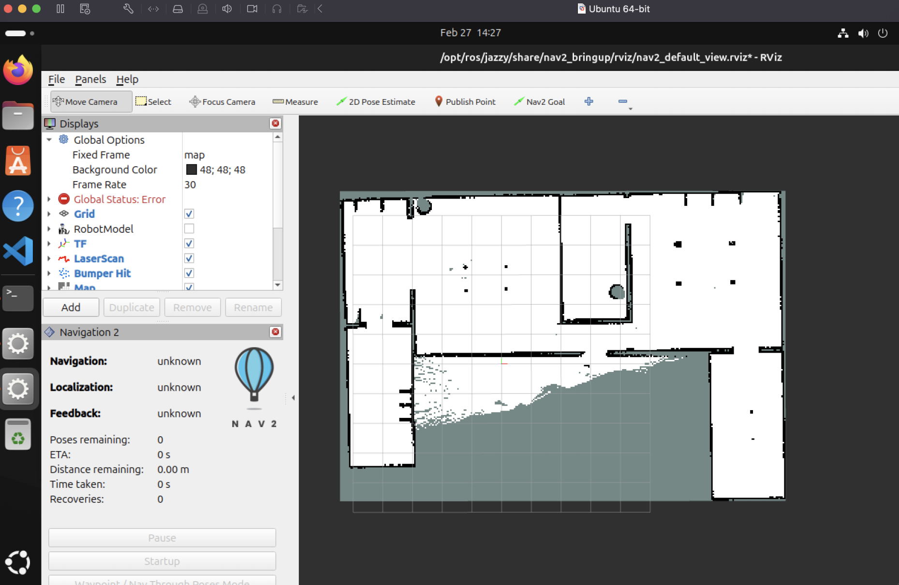
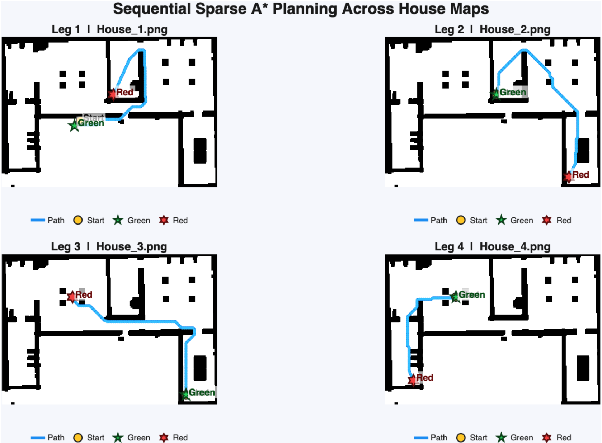
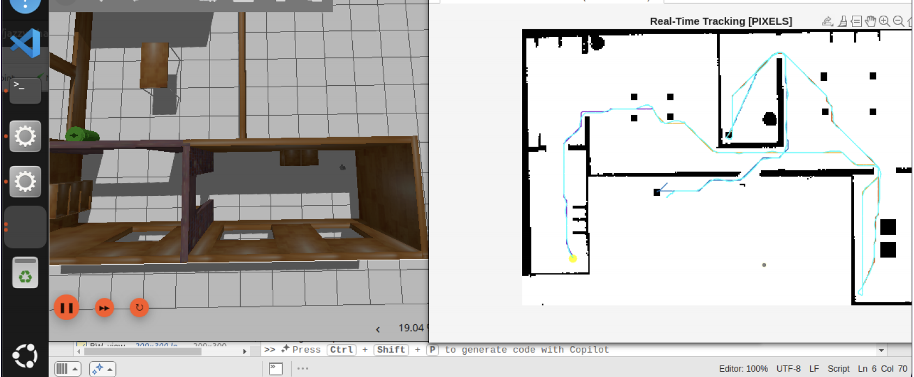
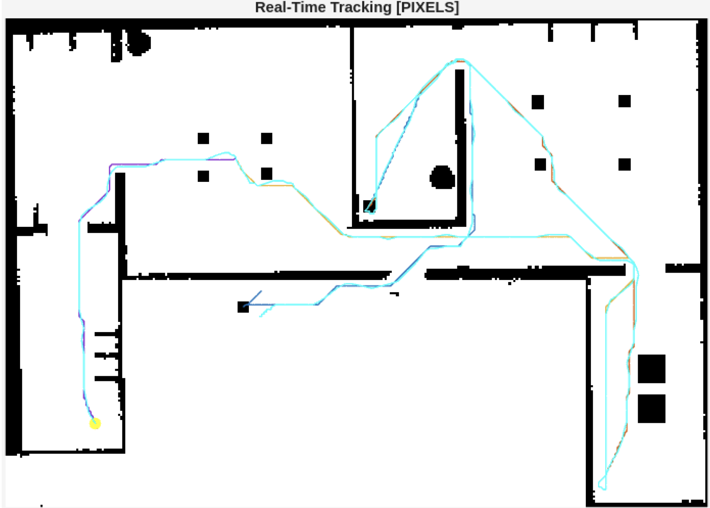

TurtleBot3 Path-Following Controller
A complete autonomous navigation pipeline for the TurtleBot3 robot: SLAM-based environment mapping, A* global planning, AMCL localization, and a pure-pursuit feedback controller augmented with a laser-scan safety layer — all developed in ROS 2 and verified in Gazebo.



Project Overview
This project was completed as the course report for Autonomous Vehicles
(Prof. Stefano Arrigoni, A.Y. 2025/2026) at Politecnico di Milano. The goal was
to implement a full autonomy chain on the TurtleBot3 platform inside the
turtlebot3_house Gazebo simulation: build a map, plan a global path,
localize in the map, and track the path with a closed-loop controller.
The work was divided into four sequential stages that mirror a standard mobile-robot navigation stack, demonstrating the integration of perception, planning, and control from first principles.
High-Level Pipeline
SLAM Mapping
Teleoperated the TurtleBot3 through the house environment while SLAM incrementally built a 2D occupancy grid in RViz. The saved map served as the fixed reference for all subsequent stages.
A* Global Planning
Implemented a memory-efficient A* planner (f = g + h, neighbors generated on-the-fly) capable of handling grids of 300 × 300 or larger. Four start–goal pairs were tested and waypoint sequences saved.
AMCL Localization
Used the saved map with AMCL for continuous pose estimation. The particle filter was initialized via RViz's "2D Pose Estimate" tool before navigation began.
Feedback Control
A pure-pursuit tracker drove the robot along the planned waypoints. A laser-scan safety layer modulated speed and heading in real time to avoid dynamic obstacles.
Control System Design
The navigation controller consists of two layers that operate simultaneously: a nominal path-following law and a reactive safety layer derived from onboard laser scans.
Nominal path-following (pure pursuit). Given the robot pose (x, y, ψ) and a reference path, the controller selects a look-ahead target (xt, yt) at a fixed distance Ld ahead along the path. The target is expressed in the robot frame and the curvature command computed as:
The speed denominator causes the robot to slow automatically through sharp turns, improving path fidelity without explicit speed scheduling.
Safety layer. Front laser beams are used to compute dmin (minimum range) and dp (low percentile of front ranges). A smooth speed cap is applied:
A danger weight λ ∈ [0, 1] blends path-tracking and obstacle-avoidance yaw rates. If dmin drops below an emergency threshold the robot halts and rotates toward the best free direction:
Waypoint tracking (assignments). Individual waypoints were also tracked with a simpler proportional law used in the assignment stages:
When d ≤ rgoal = 0.05 m the robot stopped translation and rotated in place until the yaw error fell below 3°, then advanced to the next waypoint.
Planning Results: Algorithm Comparison
Before the full navigation project, four grid maps were tested against five planning variants. A representative comparison on the first map is shown below. A* with the Manhattan heuristic consistently explored the fewest nodes while finding paths of equal quality to Dijkstra.
| Method | Runtime (s) | Explored nodes | Path steps | Travel dist. |
|---|---|---|---|---|
| Dijkstra (4-neigh.) | 0.0263 | 659 | 48 | 48.00 |
| Dijkstra (8-neigh., diag=√2) | 0.0296 | 659 | 41 | 43.90 |
| A* Euclidean | 0.0179 | 389 | 41 | 43.90 |
| A* Manhattan | 0.0103 | 372 | 41 | 43.90 |
| A* Chebyshev | 0.0105 | 408 | 41 | 43.90 |
Navigation Results
The images below show the robot executing the planned path inside the Gazebo house environment, with the real-time tracked path overlaid in MATLAB alongside the A* reference.

Conclusion
The project successfully demonstrated the full autonomy chain for mobile robot navigation. SLAM provided a high-quality occupancy map of the house environment; A* found collision-free paths across four different start–goal configurations; AMCL delivered reliable localization in the mapped environment; and the pure-pursuit controller with laser-scan safety layer tracked the planned paths smoothly while reacting to unexpected obstacles.
Key takeaways include the superior node-exploration efficiency of A* over Dijkstra (up to 44% fewer nodes explored with the Manhattan heuristic), the importance of the initial AMCL pose estimate for particle-filter convergence, and the effectiveness of blending a geometric tracker with a reactive avoidance signal through a danger-weighted mixing law.